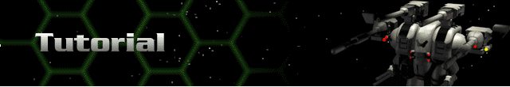
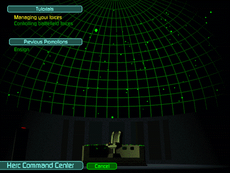

› |
› |
› |
› |
Tutorial |

Managing your forces – takes you through Herc and Bioderm repair and replacement between missions.
Controlling battlefield forces – there are an infinite number of situations you may encounter in battle. This will train you for some of them.
